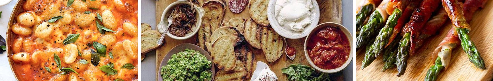
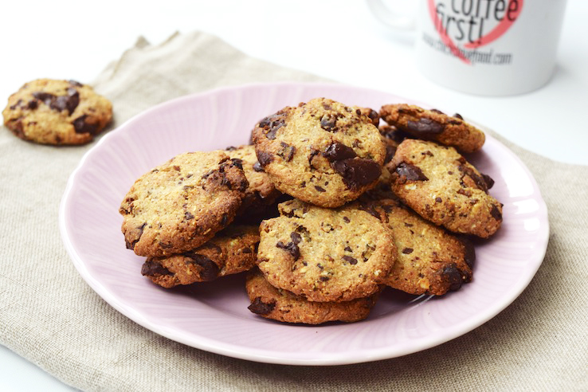
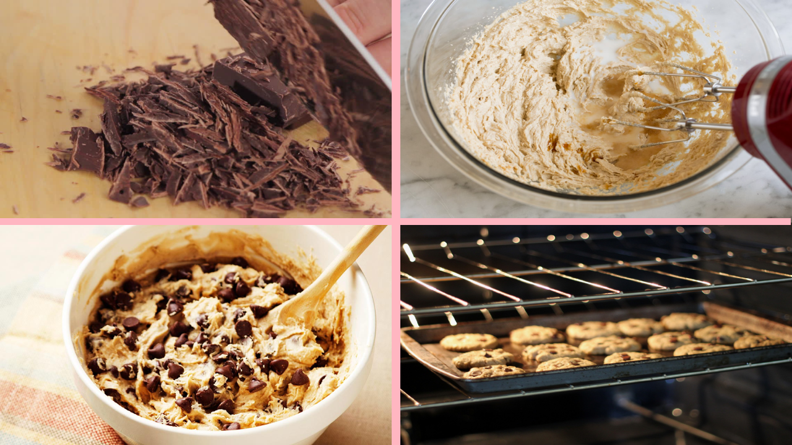

Chocolate chip cookies
Ingrediënten
100 g extra pure chocolade 70%
120 g ongezouten roomboter
75 g lichte basterdsuiker
75 g fijne kristalsuiker
1 middelgroot ei
240 g tarwebloem
1 mespunt zout
½ tl baking soda
Beschrijving
1. Snijd de chocolade grof. Klop de boter (op kamertemperatuur) met de basterdsuiker en de kristalsuiker met de handmixer tot het goed gemengd is. Dit duurt ca. 30 sec. Voeg het ei toe en klop tot een glad mengsel. Dit duurt ca. 30 sec. Zeef de bloem en spatel samen met het zouten de baking soda door het botermengsel. Spatel de chocolade erdoor.Kneed kort door. Dek af met vershoudfolie en laat minimaal 1 uur rusten in de koelkast.
2. Verwarm de oven voor op 180 °C. Bekleed een bakplaat met bakpapier. Verdeel het deeg in 8 balletjes. Verdeel de deegballetjes met voldoende tussenruimte over de bakplaat. Druk ze met je vingers slordig plat tot een koekje van Ø 10 cm.Laat in 10 min. gaar worden in de oven.< Laat ze niet te bruin worden, dan zijn ze niet meer ‘chewy’. Laat afkoelen.

